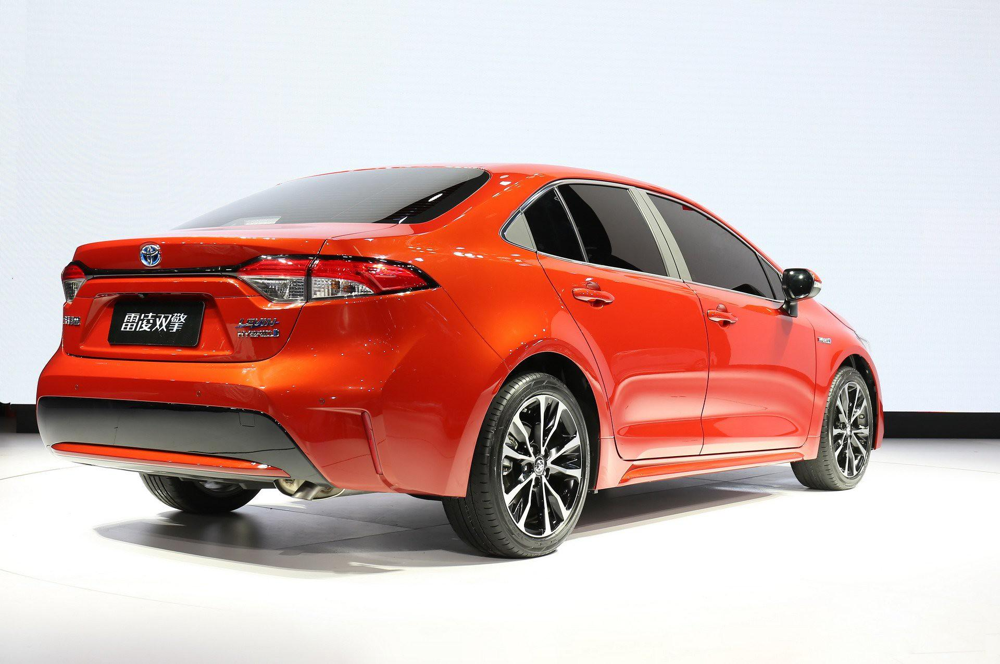
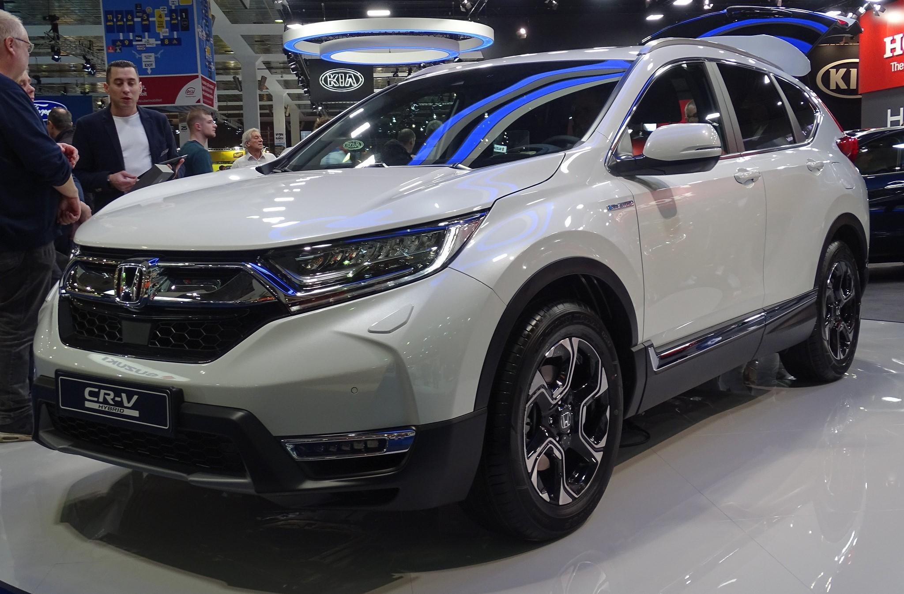

| Car Model | car Specifications |
|---|---|
| 
|
Maintaining its leadership for 4 consecutive years! What does this say? It means that the car has the optimal balance of price and quality, is convenient for everyday use, has excellent technical characteristics, and, of course, is reliable. It's no wonder that in 2022, 629 thousand units were sold. In 2021, the figure reached 985 units, which is impressive.
The Toyota Corolla has been in production for 20 generations, but only now its appearance has noticeably changed. However, the model still remains quite classic. Toyota, as is known, is quite conservative in terms of the exterior of its cars. Nevertheless, this does not prevent it from remaining the most sought-after brand in the world for many years. Price=1000,000 LE |

|
Another "leading" model from Toyota is the representative and more comfortable Camry We haven't mentioned earlier that in 2022, the company sold 7.3 million cars worldwide it's time to mention it now. To once again confirm the brand's popularity.
The Toyota Camry itself was sold almost 606 thousand units in the same year. Like the Corolla, the Camry has undergone restyling, but not a major one (the changes mainly affected the interior rather than the exterior). It can still be recognized on the street at first glance. Price=1200,000 LE |
| 
|
Unlike the previous Toyota models, the Honda CR-V has changed quite significantly in appearance (not to mention the interior) over its 6 generations. The perfectly balanced combination of price and quality, as well as reliability and comfort, remains unchanged. The car looks great and at the same time has good off-road capabilities. The car's interior is spacious and comfortable, and in the last two generations, it's also modern.
The model has been in the top three best-selling cars worldwide for several years. In 2021, sales reached 713 thousand units, and in 2022 449 thousand. The reason for the sharp decline in sales can be easily explained overall the growing demand for electric cars. Even the hybrid version of the Honda CR-V cannot stop the decline in demand for such a beautiful model by all measures. Price=1500,000 LE |
©Devolped by Abdelrhman Khaled @2024